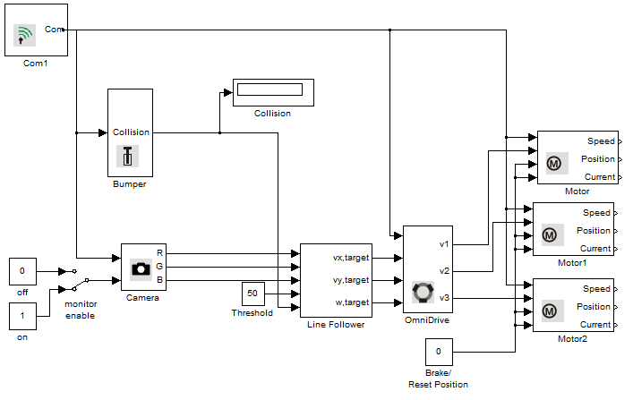

Camera Example
This example illustrates the use of the Camera on Robotino. Robotino is equipped with a color camera with VGA resolution and using this Camera, we can make Robotino detect a black line on the floor.
Contents

Blocks used in this example
Description
Using the color camera on Robotino, we can obtain images from Robotino. After obtaining the images (in R, G, B values), they are sent to the Line Follower block which inturn caculates the target x-velocity, y-velocity and omega values for Robotino. These are then used as inputs for the OmniDrive block. The motor speeds returned from the OmniDrive block are then set for the three Motor blocks.
